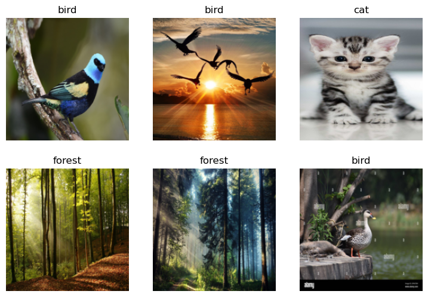
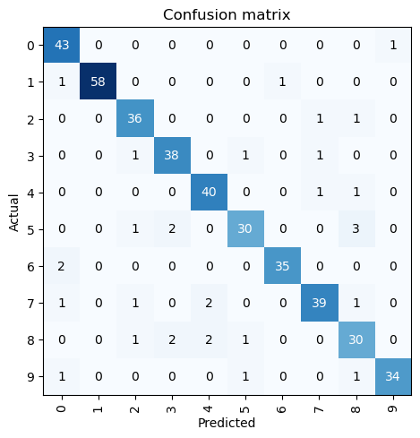

from google.colab import drive
drive.mount('/content/drive')Mounted at /content/driveApplication of the fastai library to multiple image classification datasets.
Afonso Matoso Magalhães
last-modified
/content/drive/MyDrive/fastai course/Aula 1, 2 e 3.1Let’s start by searching for a bird photo and seeing what kind of result we get. We’ll start by getting URLs from a search:
bird_urls = search_images('bird photo', max_images=1)
download_url(bird_urls[0], data_path/"bird.jpg", show_progress=False)
im = Image.open(data_path/"bird.jpg")
im.to_thumb(256,256)Searching for 'bird photo'Now let’s do the same with “forest photos”:
forest_urls = search_images('forest photo', max_images=1)
download_url(forest_urls[0], data_path/"forest.jpg", show_progress=False)
im = Image.open(data_path/"forest.jpg")
im.to_thumb(256,256)Searching for 'forest photo'Now let’s do the same with “cat photo”, “dog photo”, and “wolf photo”:
cat_urls = search_images('cat photo', max_images=1)
download_url(cat_urls[0], data_path/"cat.jpg", show_progress=False)
im = Image.open(data_path/"cat.jpg")
im.to_thumb(256,256)Searching for 'cat photo'dog_urls = search_images('dog photo', max_images=1)
download_url(dog_urls[0], data_path/"dog.jpg", show_progress=False)
im = Image.open(data_path/"dog.jpg")
im.to_thumb(256,256)Searching for 'dog photo'wolf_urls = search_images('wolf photo', max_images=1)
download_url(wolf_urls[0], data_path/"wolf.jpg", show_progress=False)
im = Image.open(data_path/"wolf.jpg")
im.to_thumb(256,256)Searching for 'wolf photo'Our searches seem to be giving reasonable results, so let’s grab a few examples of each, and save each group of photos to a different folder (I’m also trying to grab a range of lighting conditions here):
searches = 'forest','bird','cat','dog','wolf'
imgs_path = data_path/"imgs"
from time import sleep
for o in searches:
dest = imgs_path/f"{o}"
dest.mkdir(exist_ok=True, parents=True)
download_images(dest, urls=search_images(f'{o} photo'))
sleep(10) # Pause between searches to avoid over-loading server
download_images(dest, urls=search_images(f'{o} photo sun'))
sleep(10)
download_images(dest, urls=search_images(f'{o} photo shade'))
sleep(10)
resize_images(path/o, max_size=400, dest=path/o)Searching for 'forest photo'
Searching for 'forest photo sun'
Searching for 'forest photo shade'
Searching for 'bird photo'
Searching for 'bird photo sun'
Searching for 'bird photo shade'
Searching for 'cat photo'
Searching for 'cat photo sun'
Searching for 'cat photo shade'
Searching for 'dog photo'
Searching for 'dog photo sun'
Searching for 'dog photo shade'
Searching for 'wolf photo'
Searching for 'wolf photo sun'
Searching for 'wolf photo shade'Some photos might not download correctly which could cause our model training to fail, so we’ll remove them:
To train a model, we’ll need DataLoaders, which is an object that contains a training set (the images used to create a model) and a validation set (the images used to check the accuracy of a model – not used during training). In fastai we can create that easily using a DataBlock, and view sample images from it:
dls = DataBlock(blocks=(ImageBlock, CategoryBlock),
get_items=get_image_files,
splitter=RandomSplitter(valid_pct=0.2, seed=0),
get_y=parent_label,
item_tfms=[Resize(192, method="squish")]
).dataloaders(imgs_path)
dls.show_batch(max_n=6)
Here what each of the DataBlock parameters means:
blocks=(ImageBlock, CategoryBlock), - The inputs to our model are images, and the outputs are categories (in this case, “forest”, “bird”, “cat”, “dog” or “wolf”).
get_items=get_image_files, - To find all the inputs to our model, run the get_image_files function (which returns a list of all image files in a path).
splitter=RandomSplitter(valid_pct=0.2, seed=42), - Split the data into training and validation sets randomly, using 20% of the data for the validation set.
get_y=parent_label, - The labels (y values) is the name of the parent of each file (i.e. the name of the folder they’re in, which will be “forest”, “bird”, “cat”, “dog” or “wolf”).
item_tfms=[Resize(192, method='squish')] - Before training, resize each image to 192x192 pixels by “squishing” it (as opposed to cropping it).
Now we’re ready to train our model. The fastest widely used computer vision model is resnet18. You can train this in a few minutes, even on a CPU! (On a GPU, it generally takes under 10 seconds…)
fastai comes with a helpful fine_tune() method which automatically uses best practices for fine tuning a pre-trained model, so we’ll use that.
| epoch | train_loss | valid_loss | error_rate | time |
|---|---|---|---|---|
| 0 | 2.004911 | 0.474476 | 0.192771 | 00:49 |
| epoch | train_loss | valid_loss | error_rate | time |
|---|---|---|---|---|
| 0 | 0.505954 | 0.225417 | 0.096386 | 00:48 |
| 1 | 0.326397 | 0.217455 | 0.084337 | 00:48 |
| 2 | 0.236130 | 0.237563 | 0.096386 | 00:48 |
“Fine-tuning” a model means that we’re starting with a model someone else has trained using some other dataset (called the pretrained model), and adjusting the weights a little bit so that the model learns to recognise your particular dataset. In this case, the pretrained model was trained to recognise photos in imagenet, and widely-used computer vision dataset with images covering 1000 categories) For details on fine-tuning and why it’s important, check out the free free fast.ai course.
Let’s see what our model thinks about that bird we downloaded at the start:
is_bird,_,probs = learn.predict(PILImage.create(data_path/'bird.jpg'))
print(f"This is a: {is_bird}.")
print(f"Probability it's a bird: {probs[0]:.4f}")This is a: bird.
Probability it's a bird: 0.9998Good job, resnet18. :)
So, as you see, in the space of a few years, creating computer vision classification models has gone from “so hard it’s a joke” to “trivially easy and free”!
It’s not just in computer vision. Thanks to deep learning, computers can now do many things which seemed impossible just a few years ago, including creating amazing artworks, and explaining jokes. It’s moving so fast that even experts in the field have trouble predicting how it’s going to impact society in the coming years.
One thing is clear – it’s important that we all do our best to understand this technology, because otherwise we’ll get left behind!
https://course.fast.ai/Lessons/lesson2.html
This is a minimal example showing how to train a fastai model on Kaggle, and save it so you can use it in your app.
━━━━━━━━━━━━━━━━━━━━━━━━━━━━━━━━━━━━━━━━ 17.0/17.0 MB 48.4 MB/s eta 0:00:00
━━━━━━━━━━━━━━━━━━━━━━━━━━━━━━━━━━━━━━━━ 92.1/92.1 kB 7.2 MB/s eta 0:00:00
Preparing metadata (setup.py) ... done
━━━━━━━━━━━━━━━━━━━━━━━━━━━━━━━━━━━━━━━━ 310.7/310.7 kB 16.6 MB/s eta 0:00:00
━━━━━━━━━━━━━━━━━━━━━━━━━━━━━━━━━━━━━━━━ 75.6/75.6 kB 7.6 MB/s eta 0:00:00
━━━━━━━━━━━━━━━━━━━━━━━━━━━━━━━━━━━━━━━━ 138.5/138.5 kB 992.3 kB/s eta 0:00:00
━━━━━━━━━━━━━━━━━━━━━━━━━━━━━━━━━━━━━━━━ 8.6/8.6 MB 48.9 MB/s eta 0:00:00
━━━━━━━━━━━━━━━━━━━━━━━━━━━━━━━━━━━━━━━━ 60.6/60.6 kB 9.1 MB/s eta 0:00:00
━━━━━━━━━━━━━━━━━━━━━━━━━━━━━━━━━━━━━━━━ 129.9/129.9 kB 19.9 MB/s eta 0:00:00
━━━━━━━━━━━━━━━━━━━━━━━━━━━━━━━━━━━━━━━━ 77.8/77.8 kB 4.8 MB/s eta 0:00:00
━━━━━━━━━━━━━━━━━━━━━━━━━━━━━━━━━━━━━━━━ 58.3/58.3 kB 9.3 MB/s eta 0:00:00
━━━━━━━━━━━━━━━━━━━━━━━━━━━━━━━━━━━━━━━━ 71.5/71.5 kB 11.3 MB/s eta 0:00:00
Building wheel for ffmpy (setup.py) ... done::: {#cell-41 .cell 0=‘e’ 1=‘x’ 2=‘p’ 3=‘o’ 4=‘r’ 5=‘t’}
:::
Download and decompress our dataset, which is pictures of dogs and cats:
(#7390) [Path('/root/.fastai/data/oxford-iiit-pet/images/Maine_Coon_123.jpg'),Path('/root/.fastai/data/oxford-iiit-pet/images/British_Shorthair_205.jpg'),Path('/root/.fastai/data/oxford-iiit-pet/images/Sphynx_213.jpg'),Path('/root/.fastai/data/oxford-iiit-pet/images/samoyed_36.jpg'),Path('/root/.fastai/data/oxford-iiit-pet/images/samoyed_202.jpg'),Path('/root/.fastai/data/oxford-iiit-pet/images/newfoundland_5.jpg'),Path('/root/.fastai/data/oxford-iiit-pet/images/Bombay_170.jpg'),Path('/root/.fastai/data/oxford-iiit-pet/images/japanese_chin_118.jpg'),Path('/root/.fastai/data/oxford-iiit-pet/images/basset_hound_106.jpg'),Path('/root/.fastai/data/oxford-iiit-pet/images/staffordshire_bull_terrier_17.jpg')...]We need a way to label our images as dogs or cats. In this dataset, pictures of cats are given a filename that starts with a capital letter:
::: {#cell-47 .cell 0=‘e’ 1=‘x’ 2=‘p’ 3=‘o’ 4=‘r’ 5=‘t’}
:::
Now we create our DataLoaders:
Downloading: "https://download.pytorch.org/models/resnet18-f37072fd.pth" to /root/.cache/torch/hub/checkpoints/resnet18-f37072fd.pth
100%|██████████| 44.7M/44.7M [00:00<00:00, 160MB/s]| epoch | train_loss | valid_loss | error_rate | time |
|---|---|---|---|---|
| 0 | 0.212446 | 0.038725 | 0.014885 | 00:38 |
| epoch | train_loss | valid_loss | error_rate | time |
|---|---|---|---|---|
| 0 | 0.069703 | 0.039434 | 0.012855 | 00:39 |
| 1 | 0.033530 | 0.036350 | 0.011502 | 00:39 |
| 2 | 0.020604 | 0.020321 | 0.006766 | 00:39 |
Now we can export our trained Learner. This contains all the information needed to run the model:
::: {#cell-55 .cell 0=‘e’ 1=‘x’ 2=‘p’ 3=‘o’ 4=‘r’ 5=‘t’}
:::
::: {#cell-60 .cell 0=‘e’ 1=‘x’ 2=‘p’ 3=‘o’ 4=‘r’ 5=‘t’ executionInfo=‘{“elapsed”:18423,“status”:“ok”,“timestamp”:1710771017428,“user”:{“displayName”:“Afonso Matoso Magalhães”,“userId”:“00834841139025641156”},“user_tz”:0}’ outputId=‘04e918dc-4fd5-4d57-ee38-5435d17c2508’}
image = gr.Image(width=192, height=192)
label = gr.Label()
examples = ["cat.jpg", "dog.jpg", "dunno.jpg"]
intf = gr.Interface(fn=classify_image, inputs=image, outputs=label, examples=examples)
intf.launch(inline=False)Setting queue=True in a Colab notebook requires sharing enabled. Setting `share=True` (you can turn this off by setting `share=False` in `launch()` explicitly).
Colab notebook detected. To show errors in colab notebook, set debug=True in launch()
Running on public URL: https://1055565987c81c5615.gradio.live
This share link expires in 72 hours. For free permanent hosting and GPU upgrades, run `gradio deploy` from Terminal to deploy to Spaces (https://huggingface.co/spaces):::
PyTorch Image Models (timm) is a wonderful library by Ross Wightman which provides state-of-the-art pre-trained computer vision models. It’s like Huggingface Transformers, but for computer vision instead of NLP (and it’s not restricted to transformers-based models)!
Ross has been kind enough to help me understand how to best take advantage of this library by identifying the top models. I’m going to share here so of what I’ve learned from him, plus some additional ideas.
Ross regularly benchmarks new models as they are added to timm, and puts the results in a CSV in the project’s GitHub repo. To analyse the data, we’ll first clone the repo:
! git clone --depth 1 https://github.com/rwightman/pytorch-image-models.git
%cd pytorch-image-models/resultsfatal: destination path 'pytorch-image-models' already exists and is not an empty directory.
/content/drive/MyDrive/fastai course/Aula 1, 2 e 3.1/pytorch-image-models/resultsUsing Pandas, we can read the two CSV files we need, and merge them together.
We’ll also add a “family” column that will allow us to group architectures into categories with similar characteristics:
Ross has told me which models he’s found the most usable in practice, so I’ll limit the charts to just look at these. (I also include VGG, not because it’s good, but as a comparison to show how far things have come in the last few years.)
def get_data(part, col):
df = pd.read_csv(f'benchmark-{part}-amp-nhwc-pt111-cu113-rtx3090.csv').merge(df_results, on='model')
df['secs'] = 1. / df[col]
df['family'] = df.model.str.extract('^([a-z]+?(?:v2)?)(?:\d|_|$)')
df = df[~df.model.str.endswith('gn')]
df.loc[df.model.str.contains('in22'),'family'] = df.loc[df.model.str.contains('in22'),'family'] + '_in22'
df.loc[df.model.str.contains('resnet.*d'),'family'] = df.loc[df.model.str.contains('resnet.*d'),'family'] + 'd'
return df[df.family.str.contains('^re[sg]netd?|beit|convnext|levit|efficient|vit|vgg|swin')]Here’s the results for inference performance (see the last section for training performance). In this chart:
Hover your mouse over a marker to see details about the model. Double-click in the legend to display just one family. Single-click in the legend to show or hide a family.
Note: on my screen, Kaggle cuts off the family selector and some plotly functionality – to see the whole thing, collapse the table of contents on the right by clicking the little arrow to the right of “Contents”.
That number of families can be a bit overwhelming, so I’ll just pick a subset which represents a single key model from each of the families that are looking best in our plot. I’ve also separated convnext models into those which have been pretrained on the larger 22,000 category imagenet sample (convnext_in22) vs those that haven’t (convnext). (Note that many of the best performing models were trained on the larger sample – see the papers for details before coming to conclusions about the effectiveness of these architectures more generally.)
In this chart, I’ll add lines through the points of each family, to help see how they compare – but note that we can see that a linear fit isn’t actually ideal here! It’s just there to help visually see the groups.
From this, we can see that the levit family models are extremely fast for image recognition, and clearly the most accurate amongst the faster models. That’s not surprising, since these models are a hybrid of the best ideas from CNNs and transformers, so get the benefit of each. In fact, we see a similar thing even in the middle category of speeds – the best is the ConvNeXt, which is a pure CNN, but which takes advantage of ideas from the transformers literature.
For the slowest models, beit is the most accurate – although we need to be a bit careful of interpreting this, since it’s trained on a larger dataset (ImageNet-21k, which is also used for vit models).
I’ll add one other plot here, which is of speed vs parameter count. Often, parameter count is used in papers as a proxy for speed. However, as we see, there is a wide variation in speeds at each level of parameter count, so it’s really not a useful proxy.
(Parameter count may be be useful for identifying how much memory a model needs, but even for that it’s not always a great proxy.)
We’ll now replicate the above analysis for training performance. First we grab the data:
Now we can repeat the same family plot we did above:
…and we’ll also look at our chosen subset of models:
Finally, we should remember that speed depends on hardware. If you’re using something other than a modern NVIDIA GPU, your results may be different. In particular, I suspect that transformers-based models might have worse performance in general on CPUs (although I need to study this more to be sure).
━━━━━━━━━━━━━━━━━━━━━━━━━━━━━━━━━━━━━━━━ 2.2/2.2 MB 9.2 MB/s eta 0:00:00
━━━━━━━━━━━━━━━━━━━━━━━━━━━━━━━━━━━━━━━━ 23.7/23.7 MB 30.2 MB/s eta 0:00:00
━━━━━━━━━━━━━━━━━━━━━━━━━━━━━━━━━━━━━━━━ 823.6/823.6 kB 34.0 MB/s eta 0:00:00
━━━━━━━━━━━━━━━━━━━━━━━━━━━━━━━━━━━━━━━━ 14.1/14.1 MB 17.9 MB/s eta 0:00:00
━━━━━━━━━━━━━━━━━━━━━━━━━━━━━━━━━━━━━━━━ 731.7/731.7 MB 578.9 kB/s eta 0:00:00
━━━━━━━━━━━━━━━━━━━━━━━━━━━━━━━━━━━━━━━━ 410.6/410.6 MB 927.3 kB/s eta 0:00:00
━━━━━━━━━━━━━━━━━━━━━━━━━━━━━━━━━━━━━━━━ 121.6/121.6 MB 1.3 MB/s eta 0:00:00
━━━━━━━━━━━━━━━━━━━━━━━━━━━━━━━━━━━━━━━━ 56.5/56.5 MB 1.3 MB/s eta 0:00:00
━━━━━━━━━━━━━━━━━━━━━━━━━━━━━━━━━━━━━━━━ 124.2/124.2 MB 1.5 MB/s eta 0:00:00
━━━━━━━━━━━━━━━━━━━━━━━━━━━━━━━━━━━━━━━━ 196.0/196.0 MB 1.4 MB/s eta 0:00:00
━━━━━━━━━━━━━━━━━━━━━━━━━━━━━━━━━━━━━━━━ 166.0/166.0 MB 975.8 kB/s eta 0:00:00
━━━━━━━━━━━━━━━━━━━━━━━━━━━━━━━━━━━━━━━━ 99.1/99.1 kB 1.4 MB/s eta 0:00:00
━━━━━━━━━━━━━━━━━━━━━━━━━━━━━━━━━━━━━━━━ 21.1/21.1 MB 1.3 MB/s eta 0:00:00Downloading: "https://download.pytorch.org/models/resnet18-f37072fd.pth" to /root/.cache/torch/hub/checkpoints/resnet18-f37072fd.pth
100%|██████████| 44.7M/44.7M [00:01<00:00, 34.9MB/s]| epoch | train_loss | valid_loss | error_rate | time |
|---|---|---|---|---|
| 0 | 0.199996 | 0.070748 | 0.023004 | 00:49 |
| epoch | train_loss | valid_loss | error_rate | time |
|---|---|---|---|---|
| 0 | 0.076861 | 0.030587 | 0.010149 | 00:40 |
| 1 | 0.040507 | 0.031452 | 0.010149 | 00:42 |
| 2 | 0.021061 | 0.025538 | 0.008796 | 00:42 |
['convnext_atto',
'convnext_atto_ols',
'convnext_base',
'convnext_femto',
'convnext_femto_ols',
'convnext_large',
'convnext_large_mlp',
'convnext_nano',
'convnext_nano_ols',
'convnext_pico',
'convnext_pico_ols',
'convnext_small',
'convnext_tiny',
'convnext_tiny_hnf',
'convnext_xlarge',
'convnext_xxlarge',
'convnextv2_atto',
'convnextv2_base',
'convnextv2_femto',
'convnextv2_huge',
'convnextv2_large',
'convnextv2_nano',
'convnextv2_pico',
'convnextv2_small',
'convnextv2_tiny']learn = vision_learner(dls, "convnext_tiny.fb_in22k", metrics=error_rate).to_fp16()
learn.fine_tune(3)/usr/local/lib/python3.10/dist-packages/timm/models/_factory.py:117: UserWarning:
Mapping deprecated model name convnext_tiny_in22k to current convnext_tiny.fb_in22k.
/usr/local/lib/python3.10/dist-packages/huggingface_hub/utils/_token.py:88: UserWarning:
The secret `HF_TOKEN` does not exist in your Colab secrets.
To authenticate with the Hugging Face Hub, create a token in your settings tab (https://huggingface.co/settings/tokens), set it as secret in your Google Colab and restart your session.
You will be able to reuse this secret in all of your notebooks.
Please note that authentication is recommended but still optional to access public models or datasets.
| epoch | train_loss | valid_loss | error_rate | time |
|---|---|---|---|---|
| 0 | 0.059403 | 0.011887 | 0.003383 | 00:45 |
| epoch | train_loss | valid_loss | error_rate | time |
|---|---|---|---|---|
| 0 | 0.011285 | 0.010708 | 0.003383 | 00:44 |
| 1 | 0.011494 | 0.013424 | 0.004736 | 00:45 |
| 2 | 0.003962 | 0.008315 | 0.002706 | 00:45 |
| label | pixel0 | pixel1 | pixel2 | pixel3 | pixel4 | pixel5 | pixel6 | pixel7 | pixel8 | ... | pixel774 | pixel775 | pixel776 | pixel777 | pixel778 | pixel779 | pixel780 | pixel781 | pixel782 | pixel783 | |
|---|---|---|---|---|---|---|---|---|---|---|---|---|---|---|---|---|---|---|---|---|---|
| 0 | 1 | 0 | 0 | 0 | 0 | 0 | 0 | 0 | 0 | 0 | ... | 0 | 0 | 0 | 0 | 0 | 0 | 0 | 0 | 0 | 0 |
| 1 | 0 | 0 | 0 | 0 | 0 | 0 | 0 | 0 | 0 | 0 | ... | 0 | 0 | 0 | 0 | 0 | 0 | 0 | 0 | 0 | 0 |
2 rows × 785 columns
| pixel0 | pixel1 | pixel2 | pixel3 | pixel4 | pixel5 | pixel6 | pixel7 | pixel8 | pixel9 | ... | pixel774 | pixel775 | pixel776 | pixel777 | pixel778 | pixel779 | pixel780 | pixel781 | pixel782 | pixel783 | |
|---|---|---|---|---|---|---|---|---|---|---|---|---|---|---|---|---|---|---|---|---|---|
| 0 | 0 | 0 | 0 | 0 | 0 | 0 | 0 | 0 | 0 | 0 | ... | 0 | 0 | 0 | 0 | 0 | 0 | 0 | 0 | 0 | 0 |
| 1 | 0 | 0 | 0 | 0 | 0 | 0 | 0 | 0 | 0 | 0 | ... | 0 | 0 | 0 | 0 | 0 | 0 | 0 | 0 | 0 | 0 |
2 rows × 784 columns
def get_X_y(df: pd.DataFrame,
train: bool,
frac: float = None,
random_state: int = None):
if train:
sample_df = df.groupby("label").sample(frac=frac, random_state=random_state)
X, y = sample_df.iloc[:, 1:].values, sample_df.iloc[:, 0].values
else:
X = df.values
y = None
X = X.reshape(-1, 28, 28).astype(np.uint8)
return np.moveaxis(np.stack((X,) * 3, axis=1), source=1, destination=-1), y| epoch | train_loss | valid_loss | error_rate | time |
|---|---|---|---|---|
| 0 | 2.799451 | 1.431905 | 0.459524 | 00:07 |
| epoch | train_loss | valid_loss | error_rate | time |
|---|---|---|---|---|
| 0 | 1.452900 | 1.000913 | 0.314286 | 00:08 |
| 1 | 1.127767 | 0.726985 | 0.219048 | 00:08 |
| 2 | 0.822714 | 0.569272 | 0.164286 | 00:08 |
| 3 | 0.580217 | 0.472451 | 0.142857 | 00:08 |
| 4 | 0.394636 | 0.403461 | 0.116667 | 00:08 |
| 5 | 0.281271 | 0.356165 | 0.102381 | 00:08 |
| 6 | 0.194676 | 0.374367 | 0.109524 | 00:08 |
| 7 | 0.137263 | 0.370997 | 0.107143 | 00:08 |
| 8 | 0.103021 | 0.350598 | 0.104762 | 00:08 |
| 9 | 0.083260 | 0.356768 | 0.107143 | 00:08 |
We can correct images annotations or remove them, using the ImageClassifierCleaner. That will show the images for each class (in the train or validation set) where the trained model had the highest classification error. Let’s import the required modules:
Each time we make a change in one class’s and data set’s (train/validation) samples, by reannotating/removing it, we need to run the following lines before changing to another class or data set, so the changes are applied to the actual data:
In the end of validating the data, we need to create a new DataLoaders object, to reflect the changes made to the dataset, and retrain the model.
dls = DataBlock(blocks = (ImageBlock, CategoryBlock),
get_items = get_image_files,
get_y = parent_label,
splitter = RandomSplitter()
).dataloaders(train_dir)
learn = vision_learner(dls, resnet18, metrics=error_rate)
learn.fine_tune(10)
interp = ClassificationInterpretation.from_learner(learn)
interp.plot_confusion_matrix()| epoch | train_loss | valid_loss | error_rate | time |
|---|---|---|---|---|
| 0 | 2.888510 | 1.503774 | 0.525301 | 00:07 |
| epoch | train_loss | valid_loss | error_rate | time |
|---|---|---|---|---|
| 0 | 1.519504 | 1.011998 | 0.330120 | 00:07 |
| 1 | 1.199548 | 0.672037 | 0.221687 | 00:07 |
| 2 | 0.866976 | 0.474139 | 0.137349 | 00:07 |
| 3 | 0.597648 | 0.332307 | 0.101205 | 00:07 |
| 4 | 0.420963 | 0.318540 | 0.096386 | 00:07 |
| 5 | 0.295351 | 0.311173 | 0.086747 | 00:07 |
| 6 | 0.213994 | 0.280651 | 0.081928 | 00:07 |
| 7 | 0.154817 | 0.255272 | 0.067470 | 00:07 |
| 8 | 0.112886 | 0.267510 | 0.069880 | 00:07 |
| 9 | 0.089455 | 0.275279 | 0.077108 | 00:07 |

| ImageId | Label | |
|---|---|---|
| 0 | 1 | 0 |
| 1 | 2 | 0 |
| 2 | 3 | 0 |
| 3 | 4 | 0 |
| 4 | 5 | 0 |
test_dl = dls.test_dl(get_image_files(test_dir))
preds_probs = learn.get_preds(dl=test_dl)[0] # probsWe only used 5% of the data for training and validation, to make it faster, so, after iterating this process enough to be confident of our data processing and validation methods, and our model’s architecture and hypeparameters, we would retrain and validate it on the whole dataset.
| id | antelope_duiker | bird | blank | civet_genet | hog | leopard | monkey_prosimian | rodent | |
|---|---|---|---|---|---|---|---|---|---|
| 0 | ZJ000000 | 0.0 | 1.0 | 0.0 | 0.0 | 0.0 | 0.0 | 0.0 | 0.0 |
| 1 | ZJ000001 | 0.0 | 0.0 | 0.0 | 0.0 | 0.0 | 0.0 | 1.0 | 0.0 |
| label | |
|---|---|
| id | |
| ZJ000000 | bird |
| ZJ000001 | monkey_prosimian |
(16488, 1)| epoch | train_loss | valid_loss | error_rate | time |
|---|---|---|---|---|
| 0 | 3.050437 | 2.190669 | 0.696970 | 00:10 |
| epoch | train_loss | valid_loss | error_rate | time |
|---|---|---|---|---|
| 0 | 1.883267 | 1.707361 | 0.551515 | 00:12 |
| 1 | 1.671480 | 1.513506 | 0.436364 | 00:12 |
| 2 | 1.359095 | 1.500973 | 0.460606 | 00:12 |
| 3 | 1.100571 | 1.569371 | 0.448485 | 00:11 |
| 4 | 0.877178 | 1.688496 | 0.460606 | 00:11 |
| 5 | 0.698931 | 1.693306 | 0.478788 | 00:11 |
| 6 | 0.563536 | 1.697963 | 0.430303 | 00:11 |
| 7 | 0.463716 | 1.748586 | 0.448485 | 00:11 |
| 8 | 0.376198 | 1.744868 | 0.448485 | 00:11 |
| 9 | 0.311529 | 1.747836 | 0.454545 | 00:11 |
I can’t see enough to validate the images.
| id | antelope_duiker | bird | blank | civet_genet | hog | leopard | monkey_prosimian | rodent | |
|---|---|---|---|---|---|---|---|---|---|
| 0 | ZJ016488 | 0.048233 | 0.189185 | 0.044914 | 0.199588 | 0.106118 | 0.132915 | 0.166410 | 0.112637 |
| 1 | ZJ016489 | 0.097078 | 0.061400 | 0.026409 | 0.241530 | 0.144344 | 0.051780 | 0.287811 | 0.089648 |
| 2 | ZJ016490 | 0.124658 | 0.089101 | 0.189225 | 0.174494 | 0.180540 | 0.079995 | 0.085672 | 0.076314 |
| 3 | ZJ016491 | 0.109966 | 0.048397 | 0.055598 | 0.323600 | 0.322356 | 0.063252 | 0.008160 | 0.068671 |
| 4 | ZJ016492 | 0.165742 | 0.184610 | 0.005431 | 0.136806 | 0.000389 | 0.122078 | 0.151521 | 0.233423 |
['antelope_duiker', 'bird', 'blank', 'civet_genet', 'hog', 'leopard', 'monkey_prosimian', 'rodent']| id | antelope_duiker | bird | blank | civet_genet | hog | leopard | monkey_prosimian | rodent | |
|---|---|---|---|---|---|---|---|---|---|
| 1901 | ZJ016488 | 0.003612 | 6.942989e-04 | 0.323665 | 5.332318e-01 | 0.020963 | 0.100759 | 1.180175e-02 | 0.005273 |
| 1693 | ZJ016489 | 0.026071 | 8.592082e-02 | 0.024220 | 4.086171e-03 | 0.834774 | 0.011074 | 1.285491e-02 | 0.000999 |
| 2752 | ZJ016490 | 0.030828 | 5.230120e-02 | 0.045449 | 1.384969e-01 | 0.718519 | 0.003206 | 7.886172e-03 | 0.003315 |
| 2542 | ZJ016491 | 0.000002 | 8.615297e-08 | 0.000002 | 3.867934e-07 | 0.000002 | 0.999990 | 9.170705e-07 | 0.000002 |
| 2254 | ZJ016492 | 0.500051 | 1.019086e-02 | 0.049266 | 3.648468e-02 | 0.045658 | 0.003554 | 3.501456e-01 | 0.004649 |